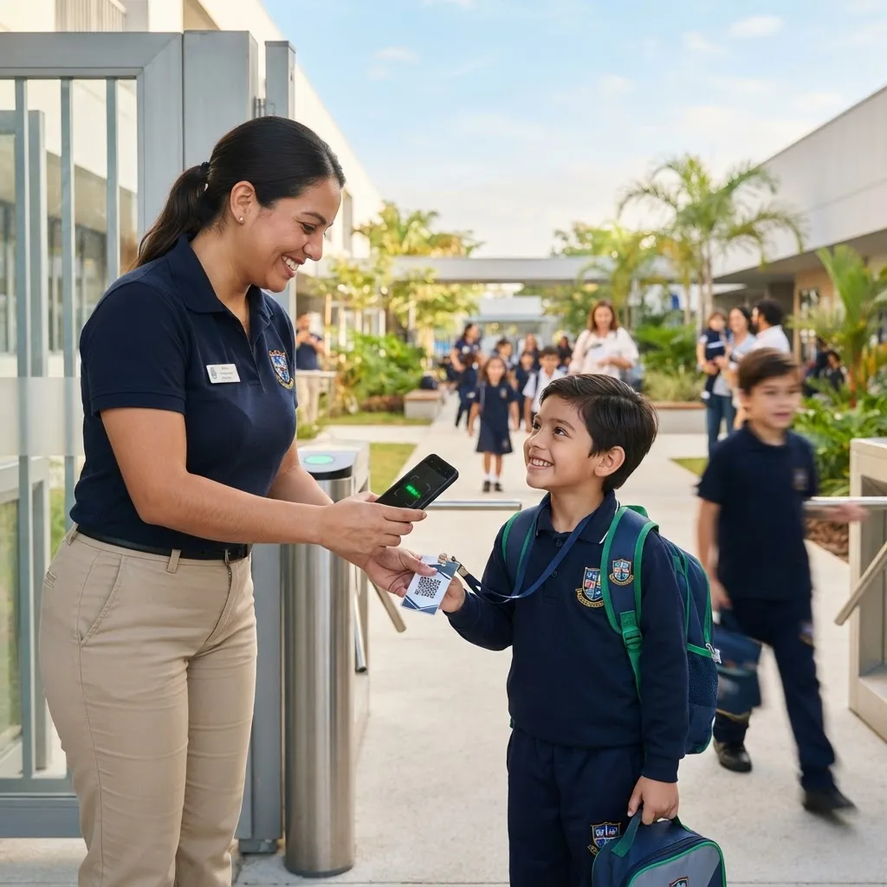
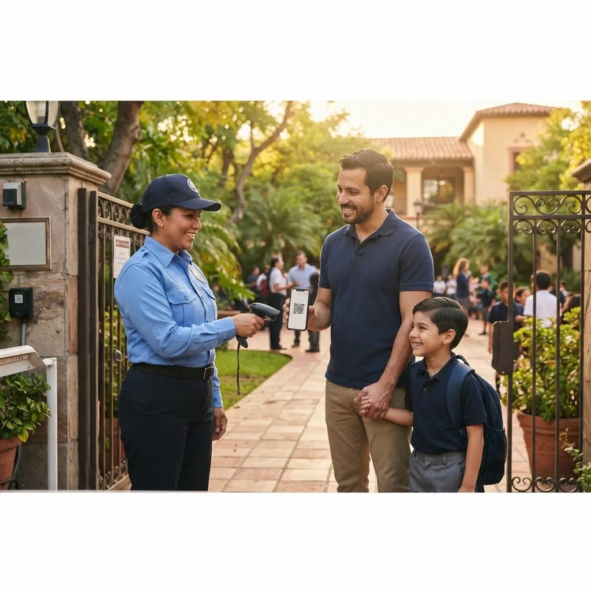

El padre autoriza
Selecciona quién recogerá al estudiante.
Picket conecta al colegio con las familias para hacer más seguros, simples y trazables los momentos que más importan.
Padres, docentes, recepción y seguridad necesitan la misma información, en el momento correcto. Picket la pone en un solo lugar.
Picket conecta autorización, identificación y registro en un proceso sencillo para el colegio y las familias.

01 · Identificación rápidaEl proceso que antes dependía de listas, llamadas o mensajes dispersos se convierte en una secuencia clara y trazable.
Selecciona quién recogerá al estudiante.
El personal consulta la autorización.
QR y Picket ID facilitan la verificación.
La salida queda trazable y puede notificar a la familia.
El personal puede verificar la identidad y la autorización en el punto de salida, mientras el colegio conserva el registro del proceso.

El carnet digital del estudiante. Una identidad disponible desde el celular, vinculada a su información y a los procesos de seguridad del colegio.
Controla quién está autorizado para recoger a cada estudiante y registra el proceso de entrega.
Gestiona autorizaciones permanentes o temporales y ten la información disponible cuando se necesita.
Registra llegadas, salidas, tardanzas, ausencias y permisos desde un mismo sistema.
Comunicados, firmas, encuestas, documentos y notificaciones en un canal institucional.
Panel administrativo, historial y reportes para tener una visión clara de lo que ocurre.
Los padres no necesitan aprender un sistema complicado. Necesitan saber que el colegio tiene la información correcta y que ellos pueden participar cuando corresponde.
Más control, menos procesos manuales y trazabilidad de los eventos importantes.
Más tranquilidad, información clara y participación desde el celular.
Información al momento y procesos más ordenados en los puntos de acceso y salida.
Picket reúne en una sola plataforma las funciones que el colegio necesita para operar con más control, seguridad y trazabilidad.
✓ Picket ID — carnet digital del estudiante
✓ Seguridad y control de recogida
✓ Autorizaciones y permisos
✓ Asistencia, entradas y salidas
✓ Comunicaciones, firmas y notificaciones
✓ Panel administrativo e historial
Es momento de transformar la experiencia de tu colegio.
Da el paso hacia una institución más segura, conectada y eficiente. Conoce Picket y descubre todo lo que puede cambiar cuando la tecnología trabaja al servicio de tu colegio.